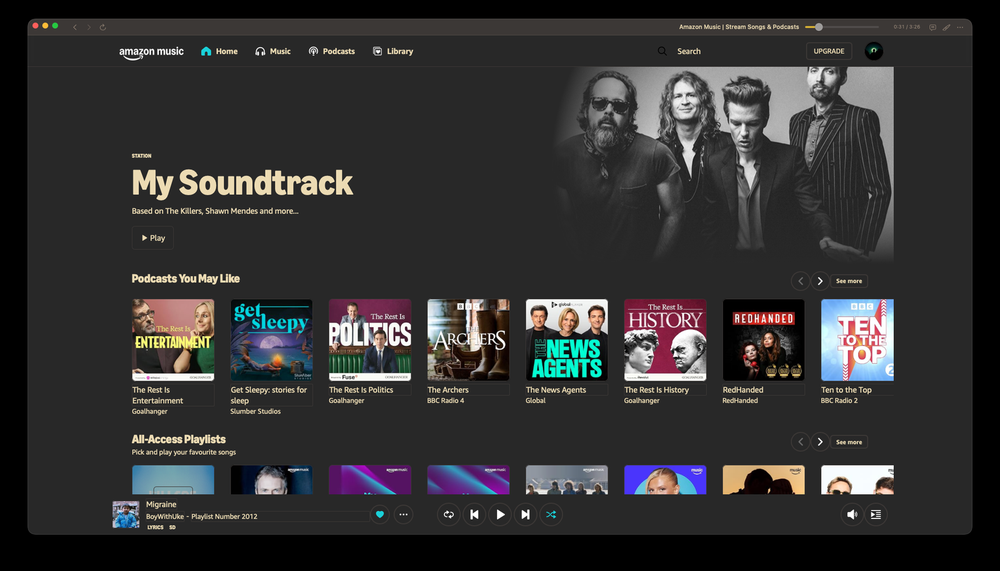
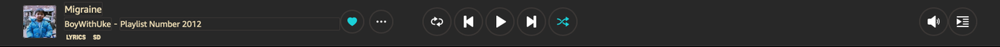

Your keyboard works
Play, pause, skip and go back from the media keys on any keyboard, and on the Mac, one single honest entry in Control Center instead of two. Space plays and pauses as long as you are not typing.
A native window for the music you already pay for. Media keys, real controls, themes, lyrics, self-installing updates.

Play, pause, skip and go back from the media keys on any keyboard, and on the Mac, one single honest entry in Control Center instead of two. Space plays and pauses as long as you are not typing.
1MB
the whole Mac binary. The Windows build carries the .NET runtime, so it is 66 MB. No Electron either way, no helper process, no daemon sitting in your menu bar.
Gruvbox Dark, Nord, Catppuccin Mocha, Tokyo Night, Dracula, One Dark, Solarized, AMOLED Black, Rose Pine, plus the system three. They recolour the bar, the settings, the lyrics screen and the Amazon page itself.
A full window of synced lines, pulled from LRCLIB. Click a line to jump to it. Artwork, transport and progress sit on the left so you never lose the song.
Scrobbles at the halfway point, sends now playing on every track change, and loves the current song with ⌘ L. Your own API key, stored on your machine.
Zonic asks GitHub for the latest release, checks the download against the published SHA256, swaps the app once it quits, and reopens. You never see a dmg again after the first one.
Amazon caps how many tracks you can skip in an hour, and that check happens on their servers, so no client can lift it. Zonic does not pretend otherwise. Instead, when a skip is refused it can run the current track to its last second so the queue moves on anyway, and the scrubber drives Amazon's own progress bar so seeking actually lands.
Every theme repaints the bar you actually look at, and the Amazon page behind it. Here is what each palette does to the window.
Gruvbox Dark
Warm charcoal with a cream text and a green accent. The one the screenshots on this page use.

Both builds come out of the same release, so they are always the same version. Neither one has an installer to click through.
Grab the dmg from the latest release. macOS will warn you the first time, because the app is signed ad hoc rather than notarised by Apple.
Drop Zonic into Applications, then right click it and choose Open once. After that it launches like anything else.
Sign in to Amazon Music in the window. If macOS is stubborn about the quarantine flag, this clears it.
xattr -dr com.apple.quarantine /Applications/Zonic.appGrab Zonic-windows.zip from the latest release. It is the only Windows asset in there.
Unzip it wherever you keep portable apps and run Zonic.exe. There is no installer, so nothing is written outside your own user folder.
SmartScreen will warn you the first time, because the exe is not code signed. Choose More info, then Run anyway. Then sign in to Amazon Music in the window.
Every update after that arrives through the app itself, on both platforms. The readme covers building either one from source if you would rather compile it.